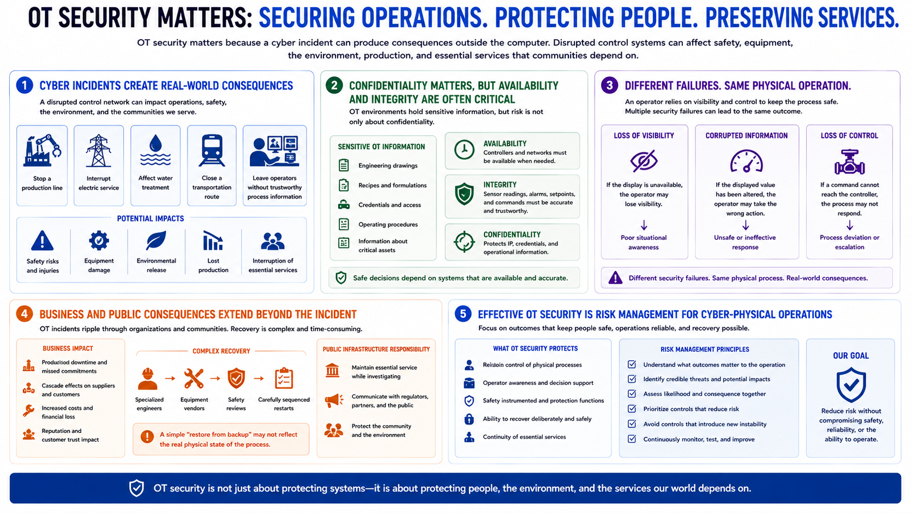

Why OT Security Matters
Connecting to LMS... Progress: in progress

Narration
OT security matters because a cyber incident can produce consequences outside the computer. A disrupted control network may stop a production line, interrupt electric service, affect water treatment, close a transportation route, or leave operators without trustworthy process information. The impact can include safety, equipment damage, environmental release, lost production, and interruption of services that communities depend on.
Data confidentiality still matters. OT environments contain engineering drawings, recipes, credentials, operating procedures, and information about critical assets. But confidentiality is only one part of the risk. Availability and integrity are often dominant concerns. Controllers must perform their functions when required, and sensor readings, alarms, setpoints, and commands must remain accurate enough for safe decisions.
Consider an operator responding to a pressure alarm. If the display is unavailable, the operator may lose visibility. If the displayed value has been altered, the operator may take the wrong action. If a command cannot reach the controller, the process may not respond. These are different security failures, but each can affect the same physical operation.
OT incidents also create business and public consequences. Production downtime can cascade through suppliers and customers. Recovery may require specialized engineers, equipment vendors, safety reviews, and carefully sequenced restarts. In public infrastructure, the organization may need to maintain essential service while investigating the event. A simple “restore from backup” assumption may not reflect the physical state of the process.
Effective OT security is therefore risk management for cyber-physical operations. It protects reliable control, operator awareness, safety functions, and the ability to recover deliberately. Security teams must understand what outcomes matter to the operation and prioritize controls that reduce those outcomes without introducing new instability.